Examples - UDP
8.1 Digital inputs example
When the change at the digital input is recognized – e.g. push button is pressed, Railduino module sends this information to the control system immediately.
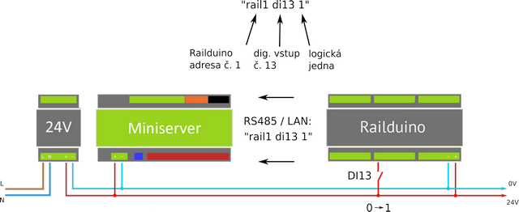
Example of command settings for sensing dig. input no. 13 in Loxone Config
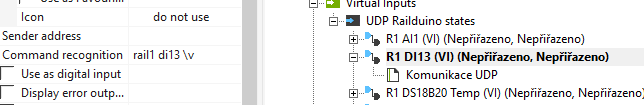
Insert new virtual input command and set the recognition command in the settings to:
rail1 di13 \v
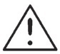
In Virtual input command settings the checkbox Use as digital input must be UNCHECKED8.2 Relay outputs example
Max. permissible voltage at relay outputs is 230V AC!
Max. perm. load current is 7A at relay outputs no. 1,2,7,8
Max. perm. load current is 4A at relay outputs no. 3,4,5,6,9,10,11,12
The Railduino module switches ON the relay output once the command is received from the superior system.
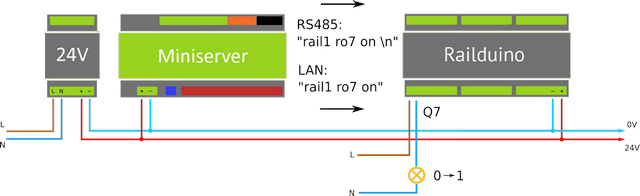
Example of command settings for controlling relay output no. 7 in Loxone Config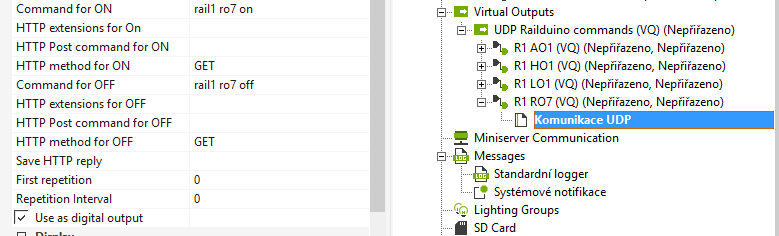
Insert new virtual output command and set the recognition commands in the settings:rail1 ro7 on
in the Command for ON and
rail1 ro7 off
in the Command for OFF
In Virtual output command settings the checkbox Use as digital output must be CHECKED
8.3 Dig. outputs (HSS or LSS) example
When using two power supplies the output grounds must be connected!
Max. perm. voltage at dig. outputs is 24V DC! Max. permi. load current is 2A per output!
Low side switch (LSS) is dig. output which connects the ground to the load = common GND is the same as Railduino’s 0V.
Terminal GND is internally connected to 0V.
High side switch (HSS) is dig. output which connects voltage V+ (terminal V+) to the load.
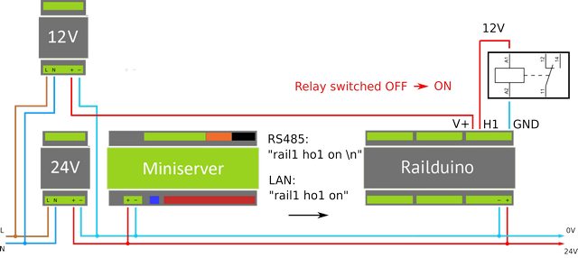
Example of controlling a digital output (high side switch - HSS) no. 1 in Loxone Config
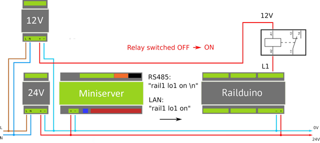
Example of controlling a digital output (low side switch - LSS) no. 1 in Loxone Config
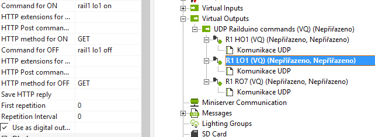
Insert new virtual output command and set the recognition commands in the settings:
rail1 lo1 on
in the Command for ON and
rail1 lo1 off
in the Command for OFF
Alternatively, you can control the digital output with PWM signal use command (as analog. output):
rail1 lo1_pwm <v>
8.4 Analog inputs example
Max. perm. voltage at the analog inputs is 10V DC!
The readings of analog inputs are made in cycles, and when the current value differs from the previous value, the module sends the new value to the superior system.
The packets with measured values are sent in 10-bit format (0-1028), e.g. 127 = 5V
Default cycle for measuring analog inputs is 10 s
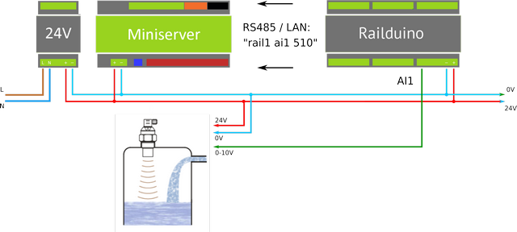
Example of sensing water level with analog input AI1 in Loxone Config
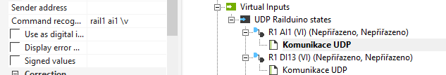
Insert new virtual input command and set the recognition command in the settings:
rail1 ai1 \v
In Virtual input command settings the checkbox Use as digital input must be UNCHECKED
8.5 Analog outputs example
Analog outputs have common ground at the GND terminal, which is connected to 0V of Railduino module.
Values of analog outputs are 0-10V, where required value of voltage is sent as bit value 0-255
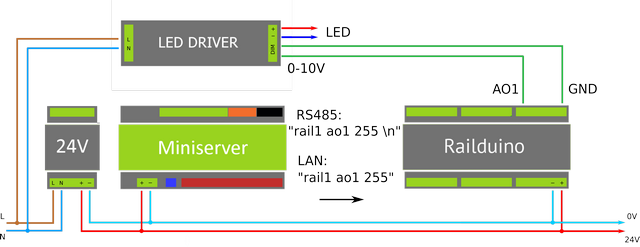
Example of controlling a led driver with analog output AO1 in Loxone Config
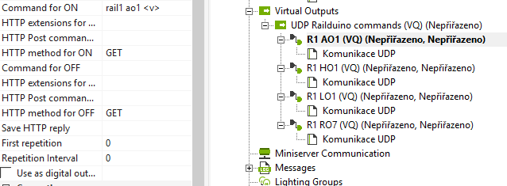
Insert new virtual output command and set the command for ON in the settings:
rail1 ao1 <v>
8.6 Onewire bus example
Common ground of the sensors is connected to the 0V power supply of the Railduino module.
1wire sensors readings are made in cycles one by one sensors. Default scanning cycle is 30s.
Supported types of the 1wire sensors:
• DS2438 – e.g. Unica 1wire modules
• DS18B20
Max. count of 1wire sensors is 10 pieces
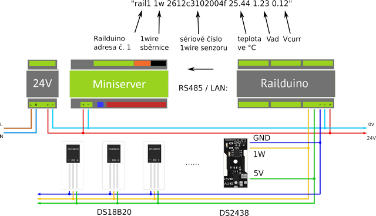
Example of connection of different 1wire sensors to the module
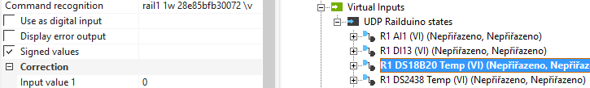
Example of command recognition settings for measurement of temperature (sensor DS18B20) in Loxone Config - insert new virtual input command and set the command with 1wire sensor specific serial numberrail1 1w 28ff41778016559 \v
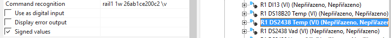
Example of command recognition settings for measurement of temperature (sensor DS2438) in Loxone Config - insert new virtual input command and set the command with 1wire sensor specific serial numberrail1 1w 264119210200001c \v
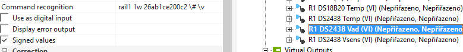
Example of command recognition settings for measurement of humidity (sensor DS2438) in Loxone Config - insert new virtual input command and set the command with 1wire sensor specific serial numberrail1 1w 264119210200001c \# \v
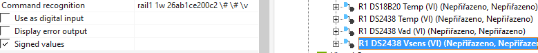
Example of command recognition settings for measurement of light intensity (sensor DS2438) in Loxone Config - insert new virtual input command and set the command with 1wire sensor specific serial numberrail1 1w 264119210200001c \# \# \v
In virtual input command settings the checkbox Use as digital input must be UNCHECKED